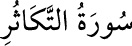

102- et-TEKÂSÜR SÛRESİ
Tekâsür, çokluk yarışı ve çoklukla övünmek demektir. Mekke’de mi yoksa
Medîne’de mi indiği konusunda ihtilâf vardır, 8 âyettir. Cahiliye Arapları, mal,
evlât ve akrabalarının çokluğunu bir gurur ve şeref sebebi sayarlar, hattâ bu
hususta yaşayanlarla yetinmeyip kabilelerinin üstünlüğünü geçmişleriyle de isbat
etmek için kabirlere gider, ölmüş akrabalarının çokluğuyla övünürlerdi. Sûrede
onların bu tavrı tenkid edilmekte ve gerçek üstünlüğün âhirette ortaya çıkacağı
ifâde edilmektedir.